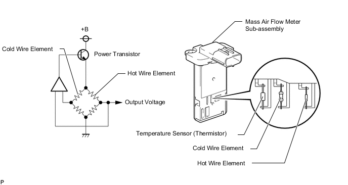
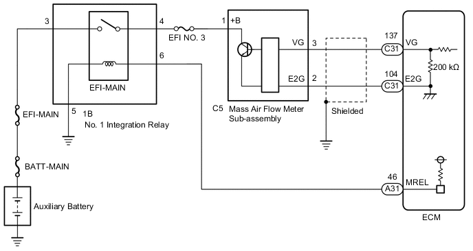

SFI SYSTEM(w/o Canister Pump Module), Diagnostic DTC:P010012
| DTC Code | DTC Name |
|---|---|
| P010012 | Mass or Volume Air Flow Sensor "A" Circuit Short to Battery |
DESCRIPTION
The mass air flow meter sub-assembly is a sensor that measures the intake air volume. The ECM uses this information to determine the ignition timing and fuel injection duration necessary for an optimal air fuel ratio. Inside the mass air flow meter sub-assembly are a hot wire element and a cold wire element which are exposed to the flow of intake air. The bridge circuit shown in the illustration outputs voltage to transmit information regarding heat loss of the hot wire element caused by air flow. Depending on the air flow, this voltage will change between approximately 0.2 V and 4.9 V. Based on this voltage, the ECM calculates the air flow to determine the ignition timing and fuel injection duration necessary for an optimal air fuel ratio.
Tech Tips
When any of these DTCs are stored, the ECM enters fail-safe mode. During fail-safe mode, the ignition timing is calculated by the ECM, according to the engine speed and throttle valve position. Fail-safe mode continues until a pass condition is detected.

| DTC No. | Detection Item | DTC Detection Condition | Trouble Area | MIL | Memory | Note |
|---|---|---|---|---|---|---|
| P010012 | Mass or Volume Air Flow Sensor "A" Circuit Short to Battery | Both of the following conditions are met for 3 seconds or more: (1 trip detection logic)
|
|
Comes on | DTC stored | SAE Code: P0103 |
Tech Tips
When these DTCs are output, check the mass air flow rate in the Data List. Enter the following menus: Powertrain / Engine / Data List / Mass Air Flow Sensor.
| DTC No. | Mass Air Flow Sensor | Malfunction |
|---|---|---|
| P010012 | 271.0 gm/sec or more |
|
If the Data List value is normal it may be due to a temporary recovery from the malfunction condition. Check for intermittent problems.
MONITOR DESCRIPTION
If the mass air flow meter sub-assembly is malfunctioning or there is an open or short in the mass air flow meter sub-assembly circuit, the voltage will deviate from the normal operating range. The ECM interprets this deviation as a malfunction in the mass air flow meter sub-assembly circuit, illuminate the MIL and stores a DTC.
Example:
When the sensor output voltage remains higher than 4.9 V for 3 seconds or more, the ECM stores a DTC.
MONITOR STRATEGY
| Frequency of Operation | Continuous |
CONFIRMATION DRIVING PATTERN
-
Connect the GTS to the DLC3.
-
Turn the power switch on (IG).
-
Turn the GTS on.
-
Clear the DTCs (even if no DTCs are stored, perform the clear DTC procedure).
-
Turn the power switch off and wait for at least 30 seconds.
-
Turn the power switch on (IG).
-
Turn the GTS on.
-
Wait 5 seconds or more.
-
Enter the following menus: Powertrain / Engine / Trouble Codes.
-
Read the pending DTCs.
Tech Tips
-
If a pending DTC is output, the system is malfunctioning.
-
If a pending DTC is not output, perform the following procedure.
-
-
Enter the following menus: Powertrain / Engine / Utility / All Readiness.
-
Input the DTC: P010012.
-
Check the DTC judgment result.
GTS Display Description NORMAL
-
DTC judgment completed
-
System normal
ABNORMAL
-
DTC judgment completed
-
System abnormal
INCOMPLETE
-
DTC judgment not completed
-
Perform driving pattern after confirming DTC enabling conditions
N/A
-
Unable to perform DTC judgment
-
Number of DTCs which do not fulfill DTC preconditions has reached ECU memory limit
Tech Tips
-
If the judgment result is NORMAL, the system is normal.
-
If the judgment result is ABNORMAL, the system is malfunctioning.
-
If the judgment result is INCOMPLETE or N/A, perform the Confirmation Driving Pattern and check the DTC judgment result again.
-
WIRING DIAGRAM

CAUTION / NOTICE / HINT
Note
-
Inspect the fuses for circuits related to this system before performing the following procedure.
-
Vehicle Control History may be stored in the hybrid vehicle control ECU if the engine is malfunctioning. Certain vehicle condition information is recorded when Vehicle Control History is stored. Reading the vehicle conditions recorded in both the freeze frame data and Vehicle Control History can be useful for troubleshooting.
(Select Powertrain in Health Check and then check the time stamp data.)
-
If any "Engine Malfunction" Vehicle Control History item has been stored in the hybrid vehicle control ECU, make sure to clear it. However, as all Vehicle Control History items are cleared simultaneously, if any Vehicle Control History items other than "Engine Malfunction" are stored, make sure to perform any troubleshooting for them before clearing Vehicle Control History.
Tech Tips
Read freeze frame data using the GTS. The ECM records vehicle and driving condition information as freeze frame data the moment a DTC is stored. When troubleshooting, freeze frame data can help determine if the vehicle was moving or stationary, if the engine was warmed up or not, if the air fuel ratio was lean or rich, and other data from the time the malfunction occurred.
PROCEDURE
-
CHECK HARNESS AND CONNECTOR (MASS AIR FLOW METER SUB-ASSEMBLY - ECM)
-
Disconnect the mass air flow meter sub-assembly connector.
-
Disconnect the ECM connector.
-
Measure the resistance according to the value(s) in the table below.
Standard Resistance Tester Connection Condition Specified Condition C5-2 (E2G) - C31-104 (E2G) Always Below 1 Ω C5-3 (VG) or C31-137 (VG) - Other terminals Always 10 kΩ or higher Result Proceed to OK NG
NG 
REPAIR OR REPLACE HARNESS OR CONNECTOR
OK 
-
-
CHECK HARNESS AND CONNECTOR (RESISTANCE OF ECM)
-
Disconnect the mass air flow meter sub-assembly connector.
-
Measure the resistance according to the value(s) in the table below.
Standard Resistance Tester Connection Condition Specified Condition C5-3 (VG) - C5-2 (E2G) Power switch off 190 to 210 kΩ C5-2 (E2G) - Body ground Power switch off Below 1 Ω Tech Tips
Perform "Inspection After Repair" after replacing the mass air flow meter sub-assembly.
Result Proceed to OK NG
OK
REPLACE MASS AIR FLOW METER SUB-ASSEMBLY Click here
NG
REPLACE ECM Click here
-